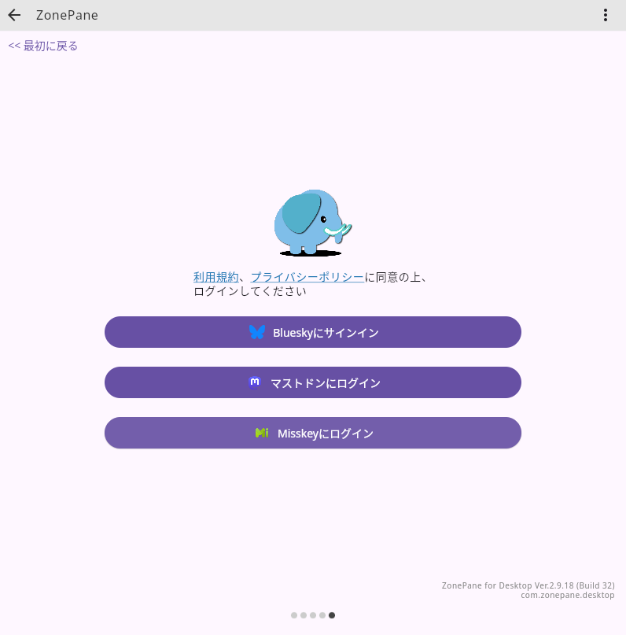
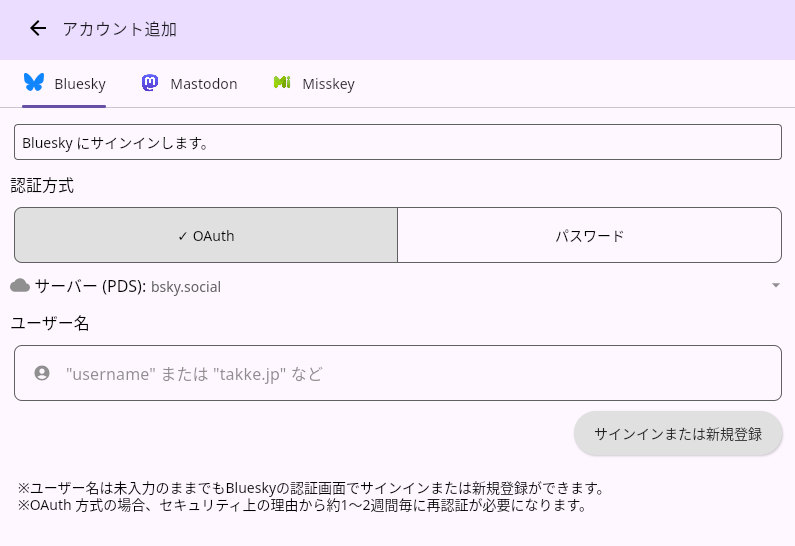
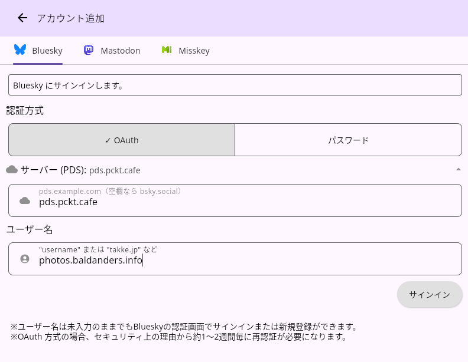
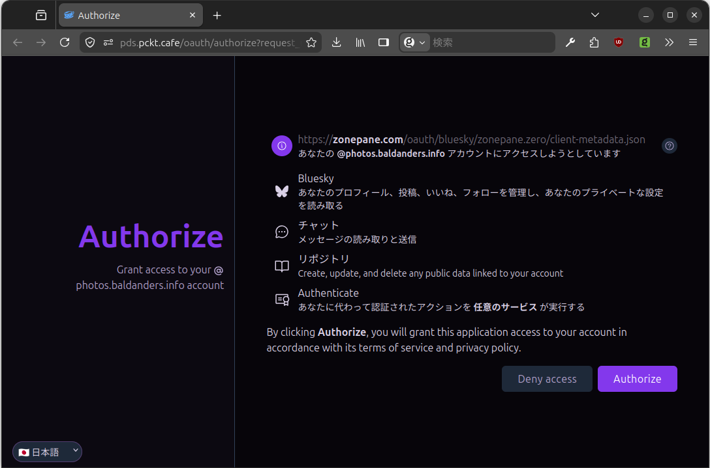
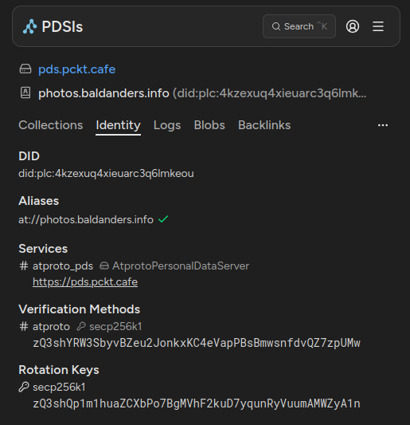

ぞーぺん（ZonePane）で bsky.social 以外の PDS にサインインする

以前書いた「そろそろ PDS を個人で管理する時代か？」で「常用しているぞーぺん（ZonePane）も bsky.social 以外の PDS に対応してない」と愚痴ったのだが ZonePane for Desktop v2.9.18 で bsky.social 以外の PDS (Personal Data Server) にもサインインできるようになった1。
ありがたや。
さっそく試してみよう。
bsky.social 以外の PDS でサインインを試す
アカウント追加画面に移動して

{kind=link}
アカウント追加より
「Bluesky にサインイン」を選択する。

{kind=link}
サインインより
折りたたまれた状態ではあるが「サーバー（PDS）」の項目が追加されている。
Bluesky の既定 PDS である bsky.social であればこの項目は空欄でもいいが，それ以外の PDS のアカウントの場合は PDS のドメインを入力する必要がある。

{kind=link}
サインインより
これで「サインイン」ボタンを押せばブラウザの OAuth 認証・承認画面に飛ぶ。

{kind=link}
ここで承認すればサインイン完了である。
Bluesky じゃないほうの PDS を利用している方はプロバイダから PDS 名のアナウンスがあるはずなので必ずメモしておくこと。 紛失しちゃった場合は PDSls で確認する手もある。

デスクトップ版 ZonePane の Mastodon やら Bluesky やらをゴチャまぜにしてマルチカラムで表示するインタフェースはホンマに重宝していて，もう手放せなくなっている。 これからもよろしくお願いします。
v2.9.18 は bsky.social 以外の PDS で OAuth 認証した場合に再認証で PDS ドメイン名を忘れてしまう不具合があったが 2026-05-08 にリリースされた v3.0.0 では修正されていた。
ありがたや 🙇
アプリケーションとデータストレージの抱き合わせはリスクか？
今までは，ユーザから見てアプリケーションとユーザデータ（のストレージ）が一体であることは当たり前だった。 分散型と言われる Mastodon でさえストレージはアプリケーション・インスタンスの一部になっていて，別のインスタンスに移りたければインスタンス間でデータの「引っ越し」が必要である（引っ越しができるだけマシだが）。
ここで AT Protocol が登場し Eurosky や Periwinkle といったアカウントとデータを専ら扱う PDS サービスが出てきたことで（ユーザから見た）アプリケーションとユーザデータの関係が変わってきているんじゃないだろうか。 たとえば Bluesky は利用したいが Bluesky が擁する PDS に自分のアカウントとデータは置きたくない，といったような。
（上の記事によると，コリイ・ドクトロウ氏は PDS を自前で用意したようだ）
私が pckt.blog サービスのアカウント（photos.baldanders.info）を取得するときには深く考えず「ひとつくらい別 PDS のアカウントがあってもいいだろう」くらいの軽い気持ちだったのだが，最近 atproto エコシステムにおいてアプリケーションとデータストレージの抱き合わせは（アプリケーションがなんであれ）リスクなんじゃないかと思い始めている。
というわけで PDS を引っ越そうか悩み中である。
【2026-05-10 追記】
Andorid 版および iOS 版の ZonePane も最新版で bsky.social 以外へのサインインに対応したようだ。
手元のスマホで試したが問題なくサインインできた。
-
デスクトップ版 ZonePane は現在「お試し版」の状態で Windows, macOS, Linux (Debian, Ubuntu) で利用可能。 ↩︎